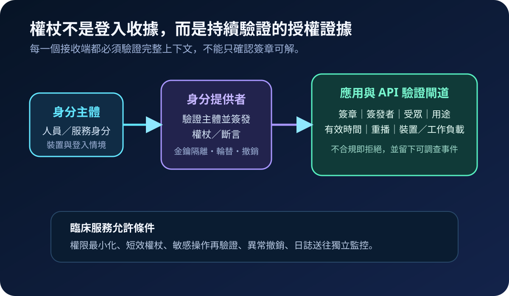
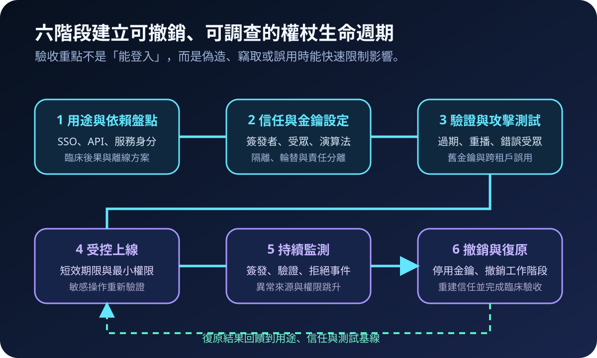
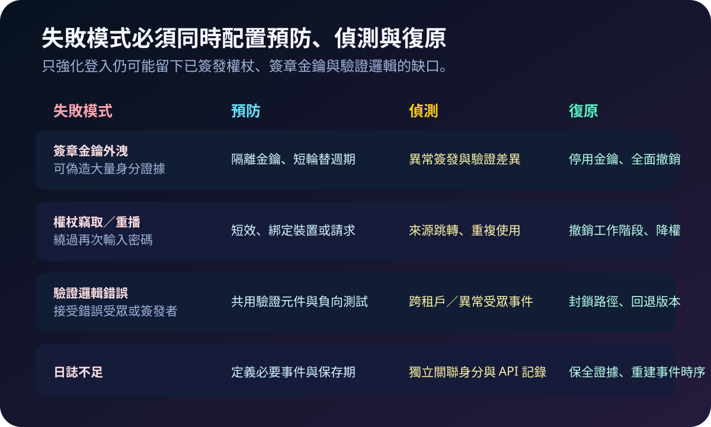

醫療資安國際觀察 · 2026-09-27
醫療雲端權杖如何避免被偽造與重播：從簽章金鑰到持續驗證
作者：Dr. William｜醫療資訊與資安治理實務工作者
醫院完成多因素驗證後，雲端服務通常改以權杖或斷言維持工作階段與 API 授權。若簽章金鑰外洩、驗證條件不完整或撤銷速度不足，攻擊者可能不必再次取得密碼，仍能冒用人員或服務身分。
名詞解釋：登入成功不等於後續請求可信
身分權杖描述已驗證的主體與登入事件；存取權杖授權應用或 API 執行特定操作；斷言是身分提供者交給依賴方的可驗證聲明；持有者權杖通常由持有者直接使用，若被竊取就可能遭重播；權杖綁定則把使用條件連到特定裝置、金鑰、請求或工作階段，降低轉交後被濫用的空間。
國際現況與適用邊界
NIST 於 2026 年 9 月 15 日發布 IR 8587 最終版，針對美國聯邦機關與雲端服務供應商提出身分權杖、存取權杖及斷言的防偽造、防竊取與防誤用實作建議，範圍涵蓋單一登入、身分聯邦與 API 存取。文件聚焦金鑰管理、權杖驗證、生命週期與持續監測。
CISA 於 2025 年 7 月說明，近期雲端身分事件暴露權杖驗證、金鑰管理、日誌與第三方依賴的限制；美國 Cyber Safety Review Board 針對 2023 年雲端郵件入侵提出的事件檢視，亦指出簽章金鑰保護、驗證元件一致性、權杖綁定與調查遙測的重要性。
對台灣醫療機構的適用方式：NIST IR 8587 的直接適用對象是美國聯邦機關與雲端供應商，CISA 與 CSRB 資料也屬美國治理情境。台灣醫院可將其轉化為雲端身分架構、採購、測試與事件應變參考，不應寫成台灣法定義務；實際要求仍須依台灣法規、主管機關公告、契約與個案臨床風險決定。
規劃：先畫出誰簽發、誰驗證、誰能撤銷
範圍至少包含員工與供應商 SSO、病人入口、API 閘道、行動應用、服務帳號、整合平台及雲端管理面。責任需分配給身分平台、應用、資安、臨床流程、法遵與供應商。驗收指標可包含短效權杖覆蓋率、舊金鑰停用時間、撤銷傳播時間、驗證失敗可見度、敏感操作再驗證率、服務身分未使用天數與事件日誌完整率。

實作：六階段形成可撤銷閉環
- 盤點用途：列出人員、服務身分、協定、依賴應用、臨床後果與離線方案。
- 固定信任：明確限制簽發者、受眾、演算法、金鑰來源、租戶與允許用途。
- 負向測試：確認過期、尚未生效、錯誤受眾、錯誤簽發者、舊金鑰、重播及跨租戶權杖都會被拒絕。
- 縮小能力：使用短效權杖、最小權限、敏感操作再驗證；工作負載使用獨立服務身分，不共用人員帳號。
- 關聯監測：將簽發、驗證、拒絕、權限變更、金鑰操作與 API 存取送入獨立監控。
- 撤銷復原：演練停用簽章金鑰、撤銷工作階段、輪替秘密、降權、可信重建及臨床服務驗收。
風險：只換密碼可能無法終止既有工作階段
常見失敗包括應用只驗證簽章、不核對受眾與簽發者；多套程式庫產生不同驗證結果；簽章金鑰與管理權限未分離；服務帳號持有長效秘密；以及事件發生後只重設密碼，未撤銷權杖、工作階段與舊金鑰。控制需同時涵蓋預防、偵測與復原。

可執行清單
- 所有 SSO、API 與服務身分是否有簽發者、受眾、用途與責任人清冊？
- 應用是否拒絕過期、錯誤受眾、錯誤簽發者、舊金鑰及跨租戶權杖？
- 簽章金鑰是否與一般管理權限分離，並有輪替、停用與緊急撤銷程序？
- 敏感臨床或管理操作是否要求重新驗證，而非沿用長時間工作階段？
- 工作負載是否使用獨立、短效、可追蹤的服務身分？
- 密碼重設後，是否同步撤銷權杖、工作階段、重新整理權杖與相關秘密？
- 能否由日誌重建權杖何時簽發、由誰驗證、存取哪些 API 及何時撤銷？
來源
- NIST｜IR 8587: Protecting Tokens and Assertions from Forgery, Theft, and Misuse（最終版：2026-09-15；查閱：2026-09-27）
- CISA JCDC｜Securing Core Cloud Identity Infrastructure（發布：2025-07-15；查閱：2026-09-27）
- Cyber Safety Review Board｜Review of the Summer 2023 Microsoft Exchange Online Intrusion（發布：2025-03；查閱：2026-09-27）
內容說明
本文依健康台灣深耕計畫相關治理內容整理，並參考 NIST、CISA 與美國 CSRB 公開資料，提出台灣醫療機構可採用的權杖盤點、信任設定、負向測試、持續監測與撤銷復原方法；不把美國聯邦指引或事件檢視視為台灣法定義務，也不取代主管機關公告、契約判讀、法律意見或個案臨床風險評估。